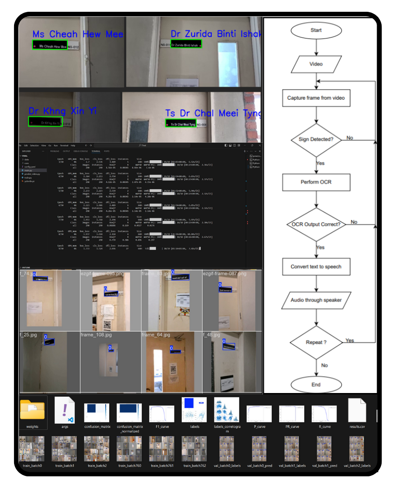
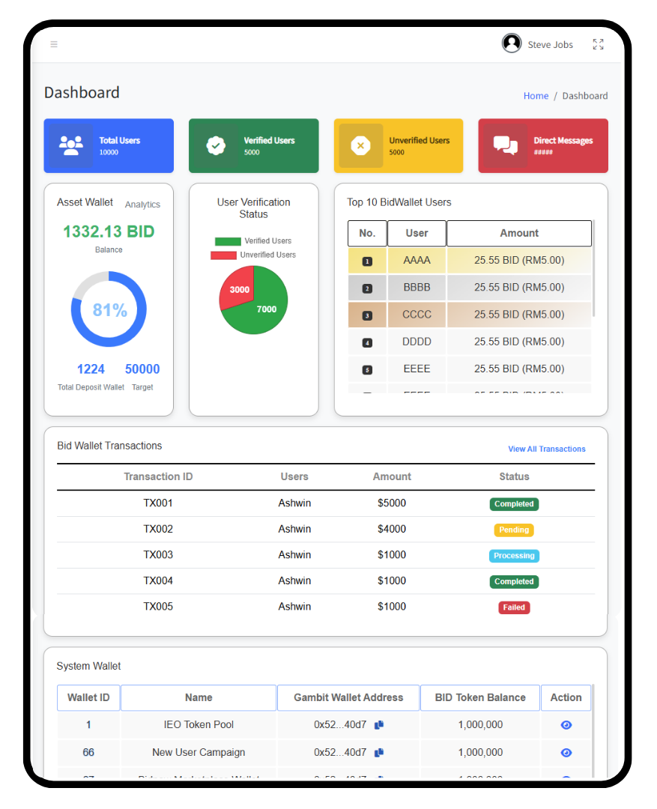
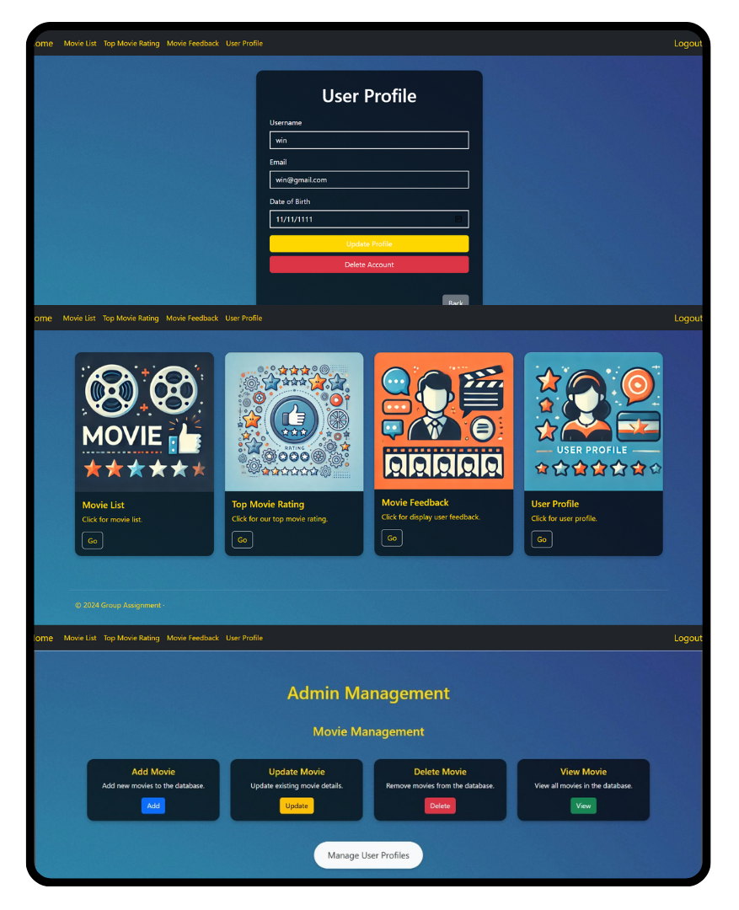
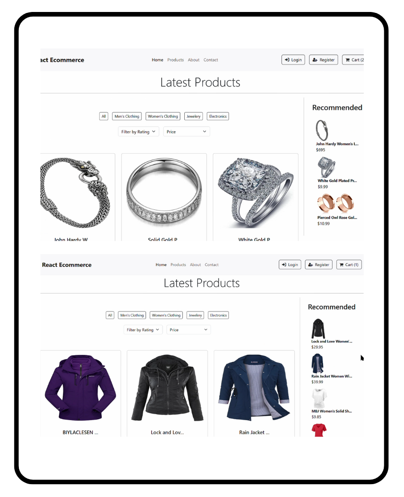

Hello I'm
And I'm a |
I’m a Computer Science graduate with a strong foundation in App Development, Software Engineering, Data Analysis and AI. My interests sit at the intersection of building reliable software, working with data at scale, and applying machine learning to solve real problems. I’m comfortable working across the stack with Python, SQL, Java, PHP, and C++. During my internship at Bitcode Technology, I built fast, secure web applications and backend systems, gaining practical experience in real-world system design and deployment. I’ve worked on data analysis, modeling, and machine learning projects that strengthened my ability to reason with data and extract meaningful insights.I’ve completed 20+ certifications across data, cloud, AI, and software fundamentals to strengthen my knowledge and accelerate learning beyond the classroom. I’m certified by Microsoft, LinkedIn, and IBM, and I’ve led tech workshops and managed cross-functional teams, sharpening both my technical communication and leadership skills.I wasn’t always this driven. Previously, I was a laid-back CS student scraping by with just-passing grades. But as I explored programming, I discovered my potential and became passionate about building things. I want to be a part of taking something meaningful, taking ideas from 1 to 100 with full dedication and heads down chasing that goal. I’m on a mission to become a world-class programmer, like Przemysław Dębiak, the guy who beat AI!
Access Group
Universiti Tunku Abdul Rahman
Completed degree in June 2025 with focus on software development, data, and AI fundamentals.
Bitcode Technology




©Winn. All rights reserved.
View this in Desktop for better experience.